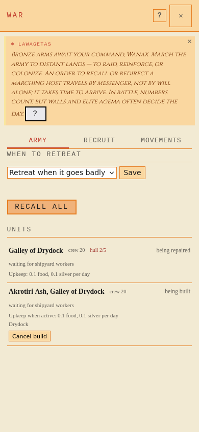
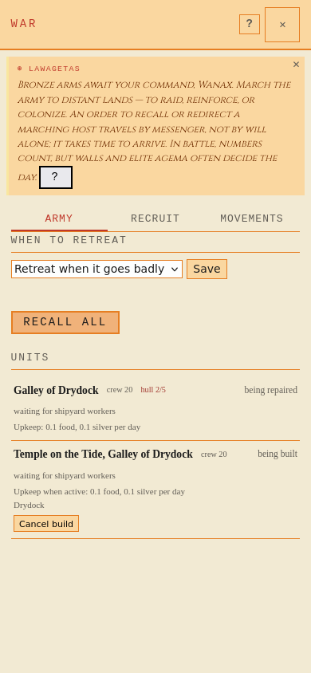
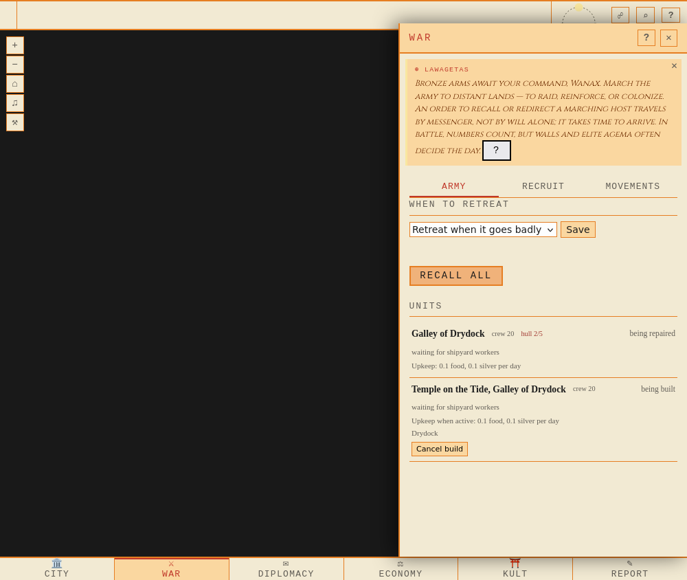
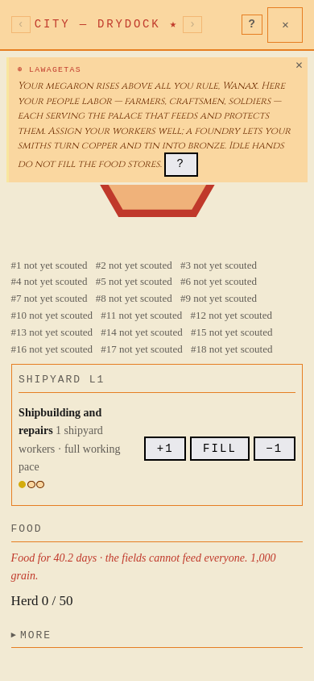
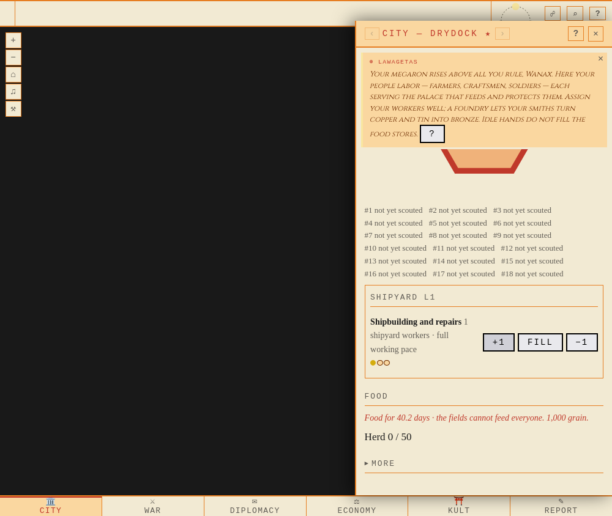

BILD, efter merge enligt Timothy 2026-10-22. Verklig HTTP/PG + Keryx + Firefox, två separata fixtures. Syntetisk kuststad utan scoutad ring; korten använder riktiga API-svar. Ingen skalning krävs vid bildens naturliga storlek.





